# install.packages(c(
# "tidyverse", "janitor", "lubridate", "stringr",
# "fixest", "did", "modelsummary", "broom", "scales"
# ))
library(tidyverse)
library(janitor)
library(lubridate)
library(stringr)
library(fixest)
library(did)
library(modelsummary)
library(broom)
library(scales)
theme_set(theme_minimal())
set.seed(1234)Resolución sintética del examen: evaluación del sistema PaP de recogida de residuos
Informe en Quarto con datos simulados, limpieza, gráficos y análisis econométrico DiD
1 Nota previa
Este informe reproduce la estructura del examen usando datos sintéticos, ya que aquí no se dispone de los ficheros originales PaP.csv, Estadisticas_residuos.csv ni del diseño de registro.
El objetivo es resolver todas las preguntas de forma reproducible, generando una base artificial con la misma lógica:
- municipios de Cataluña observados entre 2000 y 2023;
- datos anuales de residuos;
- información sobre adopción del sistema de recogida puerta a puerta (PaP);
- adopción escalonada en distintos años;
- municipios nunca tratados;
- características demográficas y de tratamiento;
- efectos simulados del PaP sobre residuos totales y porcentaje de recogida selectiva.
En un examen real bastaría con sustituir la sección de generación de datos sintéticos por la importación real de los CSV.
2 0. Paquetes y configuración
3 1. Generación de datos sintéticos
En el examen original se proporcionan dos ficheros:
PaP.csv;Estadisticas_residuos.csv.
Como no disponemos de esos datos, creamos dos bases sintéticas y luego las exportamos a CSV con formato europeo, es decir, separador ; y coma decimal. Después las volvemos a importar con read_csv2() para reproducir el flujo real del examen.
3.1 1.1. Base municipal
n_muni <- 947
years <- 2000:2023
municipios <- tibble(
codigo_municipio_base = str_pad(as.character(1:n_muni), width = 5, pad = "0"),
municipio = paste("Municipio", str_pad(1:n_muni, 3, pad = "0")),
provincia_codigo = sample(
c("08", "17", "25", "43"),
size = n_muni,
replace = TRUE,
prob = c(0.55, 0.20, 0.12, 0.13)
),
codigo_municipio = paste0(provincia_codigo, str_sub(codigo_municipio_base, 3, 5)),
comarca = paste("Comarca", sample(1:35, n_muni, replace = TRUE)),
poblacion_base = round(exp(rnorm(n_muni, log(3500), 1.05))),
renta_media = round(rnorm(n_muni, 24500, 4200)),
densidad = round(exp(rnorm(n_muni, log(180), 1.1)), 1),
zona_costera = rbinom(n_muni, 1, 0.28),
rural = as.integer(poblacion_base < 2500)
) |>
mutate(
provincia = case_when(
provincia_codigo == "08" ~ "Barcelona",
provincia_codigo == "17" ~ "Girona",
provincia_codigo == "25" ~ "Lleida",
provincia_codigo == "43" ~ "Tarragona"
),
poblacion_base = if_else(row_number() == 10, poblacion_base * 25, poblacion_base),
poblacion_base = if_else(row_number() == 20, poblacion_base * 18, poblacion_base)
)
glimpse(municipios)Rows: 947
Columns: 11
$ codigo_municipio_base <chr> "00001", "00002", "00003", "00004", "00005", "00…
$ municipio <chr> "Municipio 001", "Municipio 002", "Municipio 003…
$ provincia_codigo <chr> "08", "17", "17", "17", "43", "17", "08", "08", …
$ codigo_municipio <chr> "08001", "17002", "17003", "17004", "43005", "17…
$ comarca <chr> "Comarca 11", "Comarca 12", "Comarca 1", "Comarc…
$ poblacion_base <dbl> 4965, 15251, 5620, 5838, 1986, 59040, 3287, 2076…
$ renta_media <dbl> 23883, 27330, 27909, 31876, 19387, 26085, 25587,…
$ densidad <dbl> 522.3, 47.2, 402.3, 298.5, 392.4, 139.0, 264.5, …
$ zona_costera <int> 0, 0, 0, 0, 0, 0, 0, 0, 0, 0, 1, 0, 0, 0, 0, 0, …
$ rural <int> 0, 0, 0, 0, 1, 0, 0, 1, 0, 0, 0, 1, 0, 0, 1, 1, …
$ provincia <chr> "Barcelona", "Girona", "Girona", "Girona", "Tarr…3.2 1.2. Base de adopción PaP
adopcion <- municipios |>
mutate(
prob_adopta = plogis(
-0.7 +
0.55 * rural +
0.25 * zona_costera -
0.00002 * poblacion_base +
if_else(provincia == "Girona", 0.25, 0) +
if_else(provincia == "Barcelona", -0.10, 0)
),
ever_pap = rbinom(n(), 1, prob_adopta),
anyo_inicio_pap = if_else(
ever_pap == 1,
sample(2004:2021, n(), replace = TRUE),
NA_integer_
)
) |>
select(codigo_municipio, anyo_inicio_pap, ever_pap)
pap_raw <- expand_grid(
codigo_municipio = municipios$codigo_municipio,
year = years
) |>
left_join(municipios |> select(codigo_municipio, municipio, provincia), by = "codigo_municipio") |>
left_join(adopcion, by = "codigo_municipio") |>
mutate(
pap_activo = as.integer(!is.na(anyo_inicio_pap) & year >= anyo_inicio_pap),
n_frac_latente = case_when(
pap_activo == 0 ~ 0L,
year - anyo_inicio_pap <= 1 ~ sample(2:3, n(), replace = TRUE),
year - anyo_inicio_pap <= 4 ~ sample(3:4, n(), replace = TRUE),
TRUE ~ sample(4:5, n(), replace = TRUE)
),
frac_recogidas_pap = case_when(
pap_activo == 0 ~ NA_character_,
n_frac_latente == 2 ~ "Orgánica, Resto",
n_frac_latente == 3 ~ "Orgánica, Papel y cartón, Envases",
n_frac_latente == 4 ~ "Orgánica, Papel y cartón, Envases, Vidrio",
n_frac_latente == 5 ~ "Orgánica, Papel y cartón, Envases, Vidrio, Resto",
TRUE ~ NA_character_
)
) |>
select(codigo_municipio, year, frac_recogidas_pap, anyo_inicio_pap)
pap_raw |> head()# A tibble: 6 × 4
codigo_municipio year frac_recogidas_pap anyo_inicio_pap
<chr> <int> <chr> <int>
1 08001 2000 <NA> NA
2 08001 2001 <NA> NA
3 08001 2002 <NA> NA
4 08001 2003 <NA> NA
5 08001 2004 <NA> NA
6 08001 2005 <NA> NA3.3 1.3. Base de estadísticas de residuos
estadisticas_raw <- expand_grid(
codigo_municipio = municipios$codigo_municipio,
year = years
) |>
left_join(municipios, by = "codigo_municipio") |>
left_join(adopcion, by = "codigo_municipio") |>
arrange(codigo_municipio, year) |>
group_by(codigo_municipio) |>
mutate(
tratamiento_real = as.integer(!is.na(anyo_inicio_pap) & year >= anyo_inicio_pap),
rel_time = if_else(tratamiento_real == 1, year - anyo_inicio_pap, NA_integer_),
trend_pop = 1 + rnorm(1, 0.004, 0.006) * (year - min(year)),
poblacion = round(poblacion_base * trend_pop + rnorm(n(), 0, pmax(25, poblacion_base * 0.025))),
residuos_pc_base = 0.42 + 0.0000015 * renta_media + 0.04 * zona_costera - 0.02 * rural,
efecto_pap_residuos_pc = if_else(tratamiento_real == 1, -0.015 * pmin(rel_time, 5), 0),
residuos_total_tn = pmax(
20,
poblacion * (residuos_pc_base + efecto_pap_residuos_pc + rnorm(n(), 0, 0.035))
),
tendencia_selectiva = 28 + 0.75 * (year - min(year)),
efecto_pap_selectiva = if_else(
tratamiento_real == 1,
4 + 2.2 * pmin(rel_time, 5) + 2.5 * rural,
0
),
pct_selectiva = pmin(
pmax(
tendencia_selectiva +
efecto_pap_selectiva +
1.5 * zona_costera -
0.00008 * poblacion_base +
rnorm(n(), 0, 5),
5
),
95
),
residuos_selectiva_tn = residuos_total_tn * pct_selectiva / 100
) |>
ungroup() |>
select(
codigo_municipio, municipio, year, comarca,
poblacion, renta_media, densidad, zona_costera, rural,
residuos_total_tn, residuos_selectiva_tn, pct_selectiva
)
set.seed(777)
idx_out <- sample(1:nrow(estadisticas_raw), 3)
idx_na <- sample(1:nrow(estadisticas_raw), 25)
estadisticas_raw$poblacion[idx_out] <- estadisticas_raw$poblacion[idx_out] * 14
estadisticas_raw$renta_media[idx_na] <- NA
estadisticas_raw |> head()# A tibble: 6 × 12
codigo_municipio municipio year comarca poblacion renta_media densidad
<chr> <chr> <int> <chr> <dbl> <dbl> <dbl>
1 08001 Municipio 001 2000 Comarca 11 4855 23883 522.
2 08001 Municipio 001 2001 Comarca 11 5129 23883 522.
3 08001 Municipio 001 2002 Comarca 11 4995 23883 522.
4 08001 Municipio 001 2003 Comarca 11 4981 23883 522.
5 08001 Municipio 001 2004 Comarca 11 5009 23883 522.
6 08001 Municipio 001 2005 Comarca 11 4927 23883 522.
# ℹ 5 more variables: zona_costera <int>, rural <int>, residuos_total_tn <dbl>,
# residuos_selectiva_tn <dbl>, pct_selectiva <dbl>3.4 1.4. Exportar e importar como CSV europeo
dir.create("datos_sinteticos", showWarnings = FALSE)
write_csv2(pap_raw, "datos_sinteticos/PaP.csv")
write_csv2(estadisticas_raw, "datos_sinteticos/Estadisticas_residuos.csv")
pap <- read_csv2("datos_sinteticos/PaP.csv") |>
clean_names()
residuos <- read_csv2("datos_sinteticos/Estadisticas_residuos.csv") |>
clean_names()
glimpse(pap)Rows: 22,728
Columns: 4
$ codigo_municipio <chr> "08001", "08001", "08001", "08001", "08001", "08001…
$ year <dbl> 2000, 2001, 2002, 2003, 2004, 2005, 2006, 2007, 200…
$ frac_recogidas_pap <chr> NA, NA, NA, NA, NA, NA, NA, NA, NA, NA, NA, NA, NA,…
$ anyo_inicio_pap <dbl> NA, NA, NA, NA, NA, NA, NA, NA, NA, NA, NA, NA, NA,…glimpse(residuos)Rows: 22,728
Columns: 12
$ codigo_municipio <chr> "08001", "08001", "08001", "08001", "08001", "08…
$ municipio <chr> "Municipio 001", "Municipio 001", "Municipio 001…
$ year <dbl> 2000, 2001, 2002, 2003, 2004, 2005, 2006, 2007, …
$ comarca <chr> "Comarca 11", "Comarca 11", "Comarca 11", "Comar…
$ poblacion <dbl> 4855, 5129, 4995, 4981, 5009, 4927, 4827, 5162, …
$ renta_media <dbl> 23883, 23883, 23883, 23883, 23883, 23883, 23883,…
$ densidad <dbl> 522.3, 522.3, 522.3, 522.3, 522.3, 522.3, 522.3,…
$ zona_costera <dbl> 0, 0, 0, 0, 0, 0, 0, 0, 0, 0, 0, 0, 0, 0, 0, 0, …
$ rural <dbl> 0, 0, 0, 0, 0, 0, 0, 0, 0, 0, 0, 0, 0, 0, 0, 0, …
$ residuos_total_tn <dbl> 1814.620, 2618.108, 2145.902, 2141.452, 2289.608…
$ residuos_selectiva_tn <dbl> 464.9059, 624.8452, 443.2424, 768.1638, 778.8946…
$ pct_selectiva <dbl> 25.62001, 23.86628, 20.65529, 35.87117, 34.01869…4 Bloque 1
5 2. Pregunta 1.a
Enunciado. Importe ambos ficheros CSV, teniendo en cuenta que los valores numéricos usan la coma como separador de decimales, y fusione la información en un único fichero. ¿Detecta usted algún valor atípico —outlier— en las variables demográficas de la base de datos? Si es así, ¿podría imputar un valor en el/los atípicos?
5.1 2.1. Importación y fusión
En datos reales usaría:
pap <- read_csv2("C:/Users/Usuario/Desktop/Examen/enunciado/PaP.csv") |>
clean_names()
residuos <- read_csv2("C:/Users/Usuario/Desktop/Examen/enunciado/Estadisticas_residuos.csv") |>
clean_names()Comprobamos duplicados en la clave municipio-año.
pap |>
count(codigo_municipio, year) |>
filter(n > 1)# A tibble: 0 × 3
# ℹ 3 variables: codigo_municipio <chr>, year <dbl>, n <int>residuos |>
count(codigo_municipio, year) |>
filter(n > 1)# A tibble: 0 × 3
# ℹ 3 variables: codigo_municipio <chr>, year <dbl>, n <int>Fusionamos por código de municipio y año.
df <- residuos |>
left_join(
pap,
by = c("codigo_municipio", "year")
)
glimpse(df)Rows: 22,728
Columns: 14
$ codigo_municipio <chr> "08001", "08001", "08001", "08001", "08001", "08…
$ municipio <chr> "Municipio 001", "Municipio 001", "Municipio 001…
$ year <dbl> 2000, 2001, 2002, 2003, 2004, 2005, 2006, 2007, …
$ comarca <chr> "Comarca 11", "Comarca 11", "Comarca 11", "Comar…
$ poblacion <dbl> 4855, 5129, 4995, 4981, 5009, 4927, 4827, 5162, …
$ renta_media <dbl> 23883, 23883, 23883, 23883, 23883, 23883, 23883,…
$ densidad <dbl> 522.3, 522.3, 522.3, 522.3, 522.3, 522.3, 522.3,…
$ zona_costera <dbl> 0, 0, 0, 0, 0, 0, 0, 0, 0, 0, 0, 0, 0, 0, 0, 0, …
$ rural <dbl> 0, 0, 0, 0, 0, 0, 0, 0, 0, 0, 0, 0, 0, 0, 0, 0, …
$ residuos_total_tn <dbl> 1814.620, 2618.108, 2145.902, 2141.452, 2289.608…
$ residuos_selectiva_tn <dbl> 464.9059, 624.8452, 443.2424, 768.1638, 778.8946…
$ pct_selectiva <dbl> 25.62001, 23.86628, 20.65529, 35.87117, 34.01869…
$ frac_recogidas_pap <chr> NA, NA, NA, NA, NA, NA, NA, NA, NA, NA, NA, NA, …
$ anyo_inicio_pap <dbl> NA, NA, NA, NA, NA, NA, NA, NA, NA, NA, NA, NA, …tibble(
base = c("residuos", "pap", "fusionada"),
filas = c(nrow(residuos), nrow(pap), nrow(df)),
columnas = c(ncol(residuos), ncol(pap), ncol(df))
)# A tibble: 3 × 3
base filas columnas
<chr> <int> <int>
1 residuos 22728 12
2 pap 22728 4
3 fusionada 22728 145.2 2.2. Detección de outliers demográficos
Considero variables demográficas: poblacion, renta_media y densidad.
df |>
summarise(
poblacion_min = min(poblacion, na.rm = TRUE),
poblacion_p50 = median(poblacion, na.rm = TRUE),
poblacion_p99 = quantile(poblacion, 0.99, na.rm = TRUE),
poblacion_max = max(poblacion, na.rm = TRUE),
renta_min = min(renta_media, na.rm = TRUE),
renta_p50 = median(renta_media, na.rm = TRUE),
renta_max = max(renta_media, na.rm = TRUE),
densidad_min = min(densidad, na.rm = TRUE),
densidad_p50 = median(densidad, na.rm = TRUE),
densidad_max = max(densidad, na.rm = TRUE)
)# A tibble: 1 × 10
poblacion_min poblacion_p50 poblacion_p99 poblacion_max renta_min renta_p50
<dbl> <dbl> <dbl> <dbl> <dbl> <dbl>
1 88 3730. 44607. 884338 12337 24738
# ℹ 4 more variables: renta_max <dbl>, densidad_min <dbl>, densidad_p50 <dbl>,
# densidad_max <dbl>p_box_pob <- ggplot(df, aes(y = poblacion)) +
geom_boxplot() +
labs(
title = "Detección visual de outliers en población",
y = "Población"
)
p_box_pob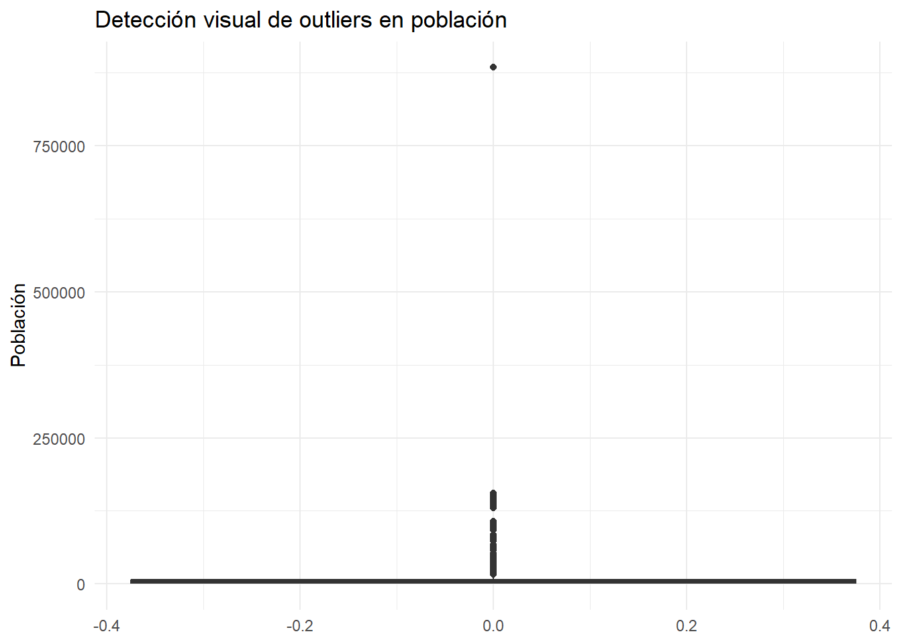
Detectamos outliers con la regla del rango intercuartílico.
q1_pob <- quantile(df$poblacion, 0.25, na.rm = TRUE)
q3_pob <- quantile(df$poblacion, 0.75, na.rm = TRUE)
iqr_pob <- q3_pob - q1_pob
lim_sup_pob <- q3_pob + 1.5 * iqr_pob
outliers_pob <- df |>
filter(poblacion > lim_sup_pob) |>
select(codigo_municipio, municipio, year, poblacion) |>
arrange(desc(poblacion))
outliers_pob |> head(20)# A tibble: 20 × 4
codigo_municipio municipio year poblacion
<chr> <chr> <dbl> <dbl>
1 17006 Municipio 006 2023 884338
2 08010 Municipio 010 2018 155864
3 08010 Municipio 010 2016 154869
4 08010 Municipio 010 2022 154677
5 08010 Municipio 010 2023 153427
6 08010 Municipio 010 2017 152084
7 08010 Municipio 010 2020 151759
8 08010 Municipio 010 2019 151608
9 08010 Municipio 010 2014 150874
10 08010 Municipio 010 2012 150618
11 08010 Municipio 010 2021 150543
12 08010 Municipio 010 2013 148207
13 08010 Municipio 010 2011 145905
14 08010 Municipio 010 2015 145676
15 08010 Municipio 010 2009 145030
16 08010 Municipio 010 2004 143546
17 08010 Municipio 010 2008 142810
18 08010 Municipio 010 2010 140879
19 08010 Municipio 010 2005 139155
20 08010 Municipio 010 2002 1390635.3 2.3. Imputación de outliers
Dado que tenemos panel municipal, una imputación razonable para un outlier puntual de población es reemplazarlo por la media de los años adyacentes del mismo municipio, si ambos existen.
df <- df |>
arrange(codigo_municipio, year) |>
group_by(codigo_municipio) |>
mutate(
poblacion_lag = lag(poblacion),
poblacion_lead = lead(poblacion),
poblacion_outlier = poblacion > lim_sup_pob,
poblacion_imp = case_when(
poblacion_outlier & !is.na(poblacion_lag) & !is.na(poblacion_lead) ~
(poblacion_lag + poblacion_lead) / 2,
TRUE ~ as.numeric(poblacion)
)
) |>
ungroup()
df |>
filter(poblacion_outlier) |>
select(codigo_municipio, municipio, year, poblacion, poblacion_lag, poblacion_lead, poblacion_imp) |>
head(20)# A tibble: 20 × 7
codigo_municipio municipio year poblacion poblacion_lag poblacion_lead
<chr> <chr> <dbl> <dbl> <dbl> <dbl>
1 08010 Municipio 010 2000 130441 NA 133093
2 08010 Municipio 010 2001 133093 130441 139063
3 08010 Municipio 010 2002 139063 133093 134215
4 08010 Municipio 010 2003 134215 139063 143546
5 08010 Municipio 010 2004 143546 134215 139155
6 08010 Municipio 010 2005 139155 143546 136694
7 08010 Municipio 010 2006 136694 139155 138552
8 08010 Municipio 010 2007 138552 136694 142810
9 08010 Municipio 010 2008 142810 138552 145030
10 08010 Municipio 010 2009 145030 142810 140879
11 08010 Municipio 010 2010 140879 145030 145905
12 08010 Municipio 010 2011 145905 140879 150618
13 08010 Municipio 010 2012 150618 145905 148207
14 08010 Municipio 010 2013 148207 150618 150874
15 08010 Municipio 010 2014 150874 148207 145676
16 08010 Municipio 010 2015 145676 150874 154869
17 08010 Municipio 010 2016 154869 145676 152084
18 08010 Municipio 010 2017 152084 154869 155864
19 08010 Municipio 010 2018 155864 152084 151608
20 08010 Municipio 010 2019 151608 155864 151759
# ℹ 1 more variable: poblacion_imp <dbl>En un informe real explicaría:
Se detectan valores atípicos en población mediante la regla IQR. Dado que la población municipal suele evolucionar suavemente en el tiempo, se imputa el valor atípico como la media entre el año anterior y el posterior del mismo municipio cuando ambos están disponibles.
6 3. Pregunta 1.b
Enunciado. A partir de la variable frac_recogidas_pap, construya una variable que indique el número de fracciones distintas recogidas con el sistema PaP y una serie de variables dummies que indiquen con uno o cero si el municipio recoge o no cada fracción de residuo con el sistema PaP. ¿Cuántos municipios recogen la fracción orgánica a través del sistema PaP cada año?
6.1 3.1. Limpieza del string de fracciones
df <- df |>
mutate(
frac_recogidas_pap = replace_na(frac_recogidas_pap, ""),
frac_clean = str_to_lower(frac_recogidas_pap),
frac_clean = str_squish(frac_clean),
frac_clean = chartr("áéíóúàèòÁÉÍÓÚÀÈÒ", "aeiouaeoAEIOUAEO", frac_clean)
)6.2 3.2. Número de fracciones
df <- df |>
mutate(
n_fracciones_pap = if_else(
frac_clean == "",
0L,
str_count(frac_clean, ",") + 1L
)
)
df |>
count(n_fracciones_pap)# A tibble: 5 × 2
n_fracciones_pap n
<int> <int>
1 0 18860
2 2 347
3 3 814
4 4 1639
5 5 10686.3 3.3. Dummies por fracción
df <- df |>
mutate(
pap_organica = as.integer(str_detect(frac_clean, "organica")),
pap_papel_carton = as.integer(str_detect(frac_clean, "papel|paper|carton")),
pap_envases = as.integer(str_detect(frac_clean, "envases|envasos")),
pap_vidrio = as.integer(str_detect(frac_clean, "vidrio|vidre")),
pap_resto = as.integer(str_detect(frac_clean, "resto|resta"))
)
df |>
select(frac_recogidas_pap, n_fracciones_pap, pap_organica, pap_papel_carton, pap_envases, pap_vidrio, pap_resto) |>
distinct() |>
head(10)# A tibble: 5 × 7
frac_recogidas_pap n_fracciones_pap pap_organica pap_papel_carton pap_envases
<chr> <int> <int> <int> <int>
1 "" 0 0 0 0
2 "Orgánica, Resto" 2 1 0 0
3 "Orgánica, Papel y… 4 1 1 1
4 "Orgánica, Papel y… 5 1 1 1
5 "Orgánica, Papel y… 3 1 1 1
# ℹ 2 more variables: pap_vidrio <int>, pap_resto <int>6.4 3.4. Municipios con orgánica PaP por año
tabla_organica <- df |>
group_by(year) |>
summarise(
municipios_organica_pap = n_distinct(codigo_municipio[pap_organica == 1]),
.groups = "drop"
)
tabla_organica# A tibble: 24 × 2
year municipios_organica_pap
<dbl> <int>
1 2000 0
2 2001 0
3 2002 0
4 2003 0
5 2004 5
6 2005 25
7 2006 46
8 2007 66
9 2008 87
10 2009 105
# ℹ 14 more rowsggplot(tabla_organica, aes(x = year, y = municipios_organica_pap)) +
geom_line() +
geom_point() +
labs(
title = "Municipios que recogen orgánica mediante PaP por año",
x = "Año",
y = "Número de municipios"
)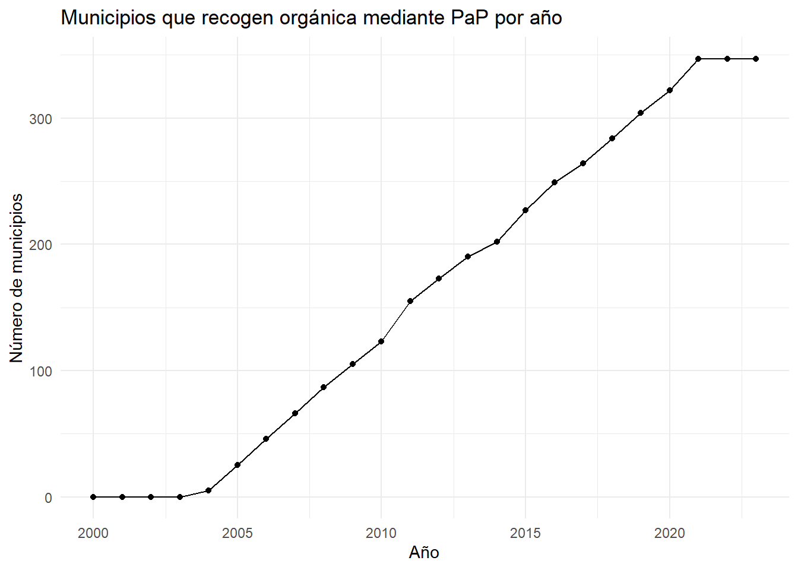
7 4. Pregunta 1.c
Enunciado. Indique, para el año 2021, cuál fue la provincia con mayor porcentaje de recogida selectiva sobre el total de residuos municipales recogidos. La provincia está contenida en los dos primeros dígitos del código municipal: “08” = Barcelona; “17” = Girona; “25” = Lleida; “43” = Tarragona.
7.1 4.1. Crear provincia a partir del código municipal
df <- df |>
mutate(
provincia_codigo_enunciado = str_sub(codigo_municipio, 1, 2),
provincia_enunciado = case_when(
provincia_codigo_enunciado == "08" ~ "Barcelona",
provincia_codigo_enunciado == "17" ~ "Girona",
provincia_codigo_enunciado == "25" ~ "Lleida",
provincia_codigo_enunciado == "43" ~ "Tarragona",
TRUE ~ NA_character_
)
)7.2 4.2. Porcentaje provincial agregado en 2021
Para una provincia, el porcentaje agregado debe calcularse como:
100 * suma(residuos selectivos) / suma(residuos totales)tabla_prov_2021 <- df |>
filter(year == 2021) |>
group_by(provincia_enunciado) |>
summarise(
residuos_total_tn = sum(residuos_total_tn, na.rm = TRUE),
residuos_selectiva_tn = sum(residuos_selectiva_tn, na.rm = TRUE),
pct_selectiva_provincial = 100 * residuos_selectiva_tn / residuos_total_tn,
.groups = "drop"
) |>
arrange(desc(pct_selectiva_provincial))
tabla_prov_2021# A tibble: 4 × 4
provincia_enunciado residuos_total_tn residuos_selectiva_tn
<chr> <dbl> <dbl>
1 Tarragona 278879. 128798.
2 Girona 674416. 310389.
3 Barcelona 1631819. 747433.
4 Lleida 425204. 189872.
# ℹ 1 more variable: pct_selectiva_provincial <dbl>prov_max_2021 <- tabla_prov_2021 |> slice_max(pct_selectiva_provincial, n = 1)
prov_max_2021# A tibble: 1 × 4
provincia_enunciado residuos_total_tn residuos_selectiva_tn
<chr> <dbl> <dbl>
1 Tarragona 278879. 128798.
# ℹ 1 more variable: pct_selectiva_provincial <dbl>cat(
"En 2021, la provincia con mayor porcentaje agregado de recogida selectiva es **",
prov_max_2021$provincia_enunciado,
"**, con un porcentaje de ",
round(prov_max_2021$pct_selectiva_provincial, 2),
"%.
",
sep = ""
)En 2021, la provincia con mayor porcentaje agregado de recogida selectiva es Tarragona, con un porcentaje de 46.18%.
8 5. Pregunta 1.d
Enunciado. Genere una variable dummy llamada tratamiento que tome el valor 1 si, para cada año, un municipio tiene en funcionamiento un sistema PaP. ¿Cuántos municipios adoptan el sistema PaP cada año? ¿Cuántos municipios no adoptan nunca el sistema PaP?
8.1 5.1. Crear dummy de tratamiento
df <- df |>
mutate(
tratamiento = as.integer(!is.na(anyo_inicio_pap) & year >= anyo_inicio_pap)
)8.2 5.2. Municipios que adoptan cada año
tabla_adopciones <- df |>
arrange(codigo_municipio, year) |>
group_by(codigo_municipio) |>
mutate(
adopta_este_anyo = tratamiento == 1 & lag(tratamiento, default = 0) == 0
) |>
ungroup() |>
group_by(year) |>
summarise(
n_adoptan = sum(adopta_este_anyo, na.rm = TRUE),
.groups = "drop"
)
tabla_adopciones# A tibble: 24 × 2
year n_adoptan
<dbl> <int>
1 2000 0
2 2001 0
3 2002 0
4 2003 0
5 2004 5
6 2005 20
7 2006 21
8 2007 20
9 2008 21
10 2009 18
# ℹ 14 more rowsggplot(tabla_adopciones, aes(x = year, y = n_adoptan)) +
geom_col() +
labs(
title = "Número de municipios que adoptan PaP cada año",
x = "Año",
y = "Nuevas adopciones"
)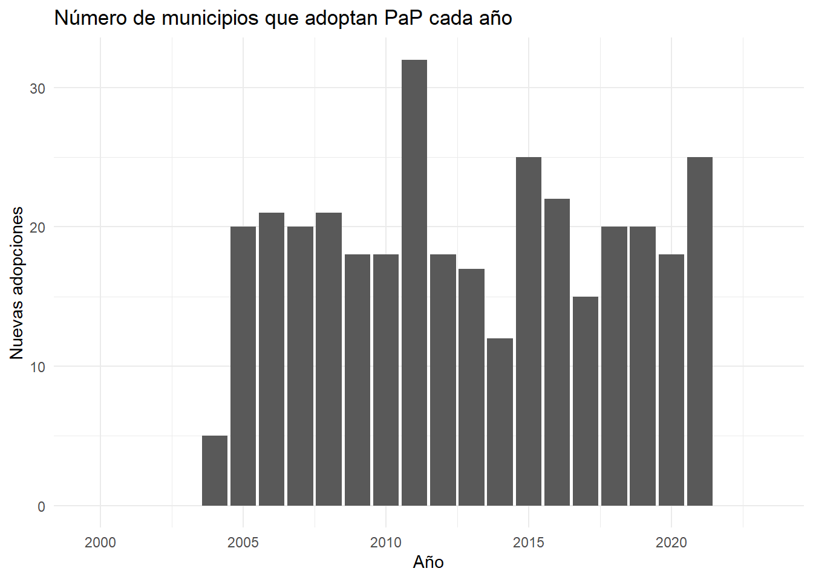
8.3 5.3. Municipios nunca tratados
tabla_nunca_tratados <- df |>
group_by(codigo_municipio) |>
summarise(
ever_treated = any(tratamiento == 1, na.rm = TRUE),
.groups = "drop"
) |>
summarise(
municipios_nunca_tratados = sum(!ever_treated),
municipios_alguna_vez_tratados = sum(ever_treated)
)
tabla_nunca_tratados# A tibble: 1 × 2
municipios_nunca_tratados municipios_alguna_vez_tratados
<int> <int>
1 600 3479 Bloque 2
10 6. Pregunta 2.a.1
Enunciado. Realice gráficos que permitan responder: ¿el porcentaje de residuos recogidos de forma selectiva aumenta tras la adopción del sistema PaP?
10.1 6.1. Evolución bruta por tratamiento activo
graf_selectiva_trat <- df |>
group_by(year, tratamiento) |>
summarise(
pct_selectiva_media = mean(pct_selectiva, na.rm = TRUE),
.groups = "drop"
) |>
ggplot(aes(x = year, y = pct_selectiva_media, color = factor(tratamiento))) +
geom_line(linewidth = 1) +
geom_point() +
labs(
title = "Porcentaje medio de recogida selectiva según tratamiento activo",
x = "Año",
y = "% recogida selectiva",
color = "PaP activo"
)
graf_selectiva_trat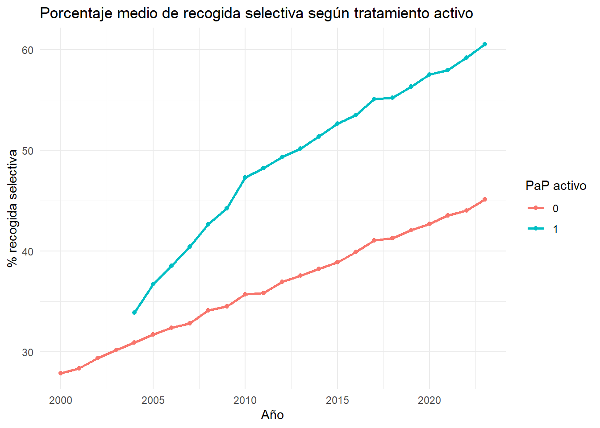
10.2 6.2. Event study descriptivo relativo al inicio de PaP
graf_event_desc <- df |>
filter(!is.na(anyo_inicio_pap)) |>
mutate(rel_time = year - anyo_inicio_pap) |>
filter(rel_time >= -5, rel_time <= 8) |>
group_by(rel_time) |>
summarise(
pct_selectiva_media = mean(pct_selectiva, na.rm = TRUE),
.groups = "drop"
) |>
ggplot(aes(x = rel_time, y = pct_selectiva_media)) +
geom_vline(xintercept = -1, linetype = "dashed") +
geom_line(linewidth = 1) +
geom_point() +
labs(
title = "Evolución descriptiva alrededor de la adopción del PaP",
x = "Años desde adopción",
y = "% recogida selectiva medio"
)
graf_event_desc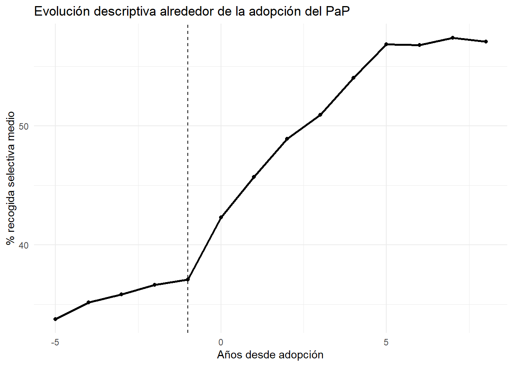
Interpretación descriptiva:
En los datos sintéticos se observa un aumento del porcentaje de recogida selectiva tras la adopción del sistema PaP. No obstante, este gráfico no controla por tendencias comunes ni por diferencias entre municipios, por lo que la respuesta causal se aborda en el Bloque 3.
11 7. Pregunta 2.a.2
Enunciado. Realice gráficos que permitan responder: ¿a mayor cantidad de residuos recogidos menor es el porcentaje de residuos recogidos de forma selectiva?
11.1 7.1. Relación entre residuos totales y porcentaje selectivo
graf_scatter <- ggplot(df, aes(x = residuos_total_tn, y = pct_selectiva)) +
geom_point(alpha = 0.20) +
geom_smooth(method = "lm", se = TRUE) +
scale_x_continuous(labels = label_number(big.mark = ".", decimal.mark = ",")) +
labs(
title = "Relación entre residuos totales y porcentaje de recogida selectiva",
x = "Residuos totales recogidos (toneladas)",
y = "% recogida selectiva"
)
graf_scatter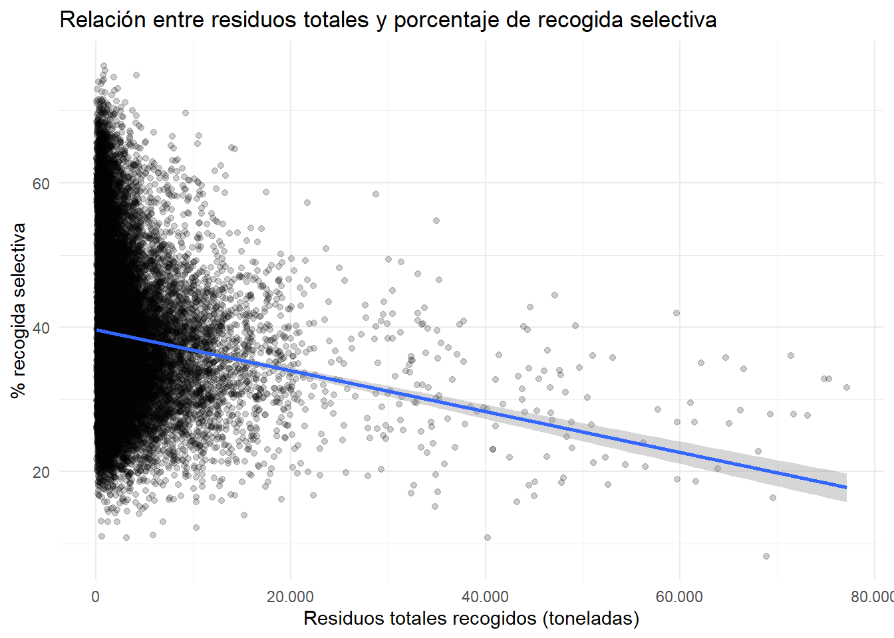
11.2 7.2. Relación en logs
graf_scatter_log <- df |>
mutate(log_residuos_total = log(residuos_total_tn)) |>
ggplot(aes(x = log_residuos_total, y = pct_selectiva)) +
geom_point(alpha = 0.20) +
geom_smooth(method = "lm", se = TRUE) +
labs(
title = "Relación entre log residuos totales y porcentaje selectivo",
x = "Log residuos totales",
y = "% recogida selectiva"
)
graf_scatter_log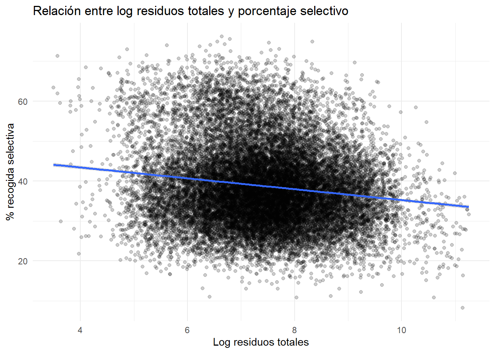
Estimación descriptiva simple:
mod_desc <- feols(
pct_selectiva ~ log(residuos_total_tn),
data = df,
vcov = "hetero"
)
modelsummary(
list("Descriptivo" = mod_desc),
statistic = "({std.error})"
)| Descriptivo | |
|---|---|
| (Intercept) | 48.865 |
| (0.466) | |
| log(residuos_total_tn) | -1.362 |
| (0.060) | |
| Num.Obs. | 22728 |
| R2 | 0.023 |
| R2 Adj. | 0.023 |
| AIC | 169090.7 |
| BIC | 169106.8 |
| RMSE | 9.98 |
| Std.Errors | Heteroskedasticity-robust |
12 Bloque 3
13 8. Preparación para análisis econométrico
Enunciado general. Utilice análisis econométrico y aporte tablas y/o gráficos para responder. Centre sus respuestas en efectos a corto plazo, máximo 5 años tras el inicio del tratamiento.
Dado que la adopción del PaP es escalonada, el estimador principal será Callaway y Sant’Anna (did::att_gt()), que estima efectos por cohorte y periodo ATT(g,t).
df_did <- df |>
mutate(
id = as.integer(factor(codigo_municipio)),
G = if_else(
is.na(anyo_inicio_pap),
0L,
as.integer(anyo_inicio_pap)
),
rel_time_did = if_else(G > 0L, year - G, NA_integer_),
log_residuos_total = log(residuos_total_tn),
log_poblacion = log(poblacion_imp),
log_densidad = log(densidad)
) |>
group_by(codigo_municipio) |>
mutate(
poblacion_pre = poblacion_imp[year == min(year)][1],
log_poblacion_pre = log(poblacion_pre),
renta_pre = if_else(
is.na(renta_media[year == min(year)][1]),
median(renta_media, na.rm = TRUE),
renta_media[year == min(year)][1]
),
densidad_pre = densidad[year == min(year)][1],
rural_pre = rural[year == min(year)][1],
zona_costera_pre = zona_costera[year == min(year)][1]
) |>
ungroup() |>
filter(!is.na(log_residuos_total), !is.na(pct_selectiva), !is.na(log_poblacion_pre), !is.na(renta_pre))14 9. Pregunta 3.a
Enunciado. ¿Qué impacto causal tiene el establecimiento del sistema PaP sobre la cantidad de residuos totales recogidos y sobre el porcentaje de residuos recogidos de manera selectiva?
14.1 9.1. Estimador principal: DiD escalonado con DR
att_residuos_dr <- att_gt(
yname = "log_residuos_total",
tname = "year",
idname = "id",
gname = "G",
xformla = ~ log_poblacion_pre + renta_pre + densidad_pre + rural_pre + zona_costera_pre,
data = df_did,
panel = TRUE,
control_group = "notyettreated",
est_method = "dr",
bstrap = TRUE,
biters = 100,
cband = TRUE
)
att_selectiva_dr <- att_gt(
yname = "pct_selectiva",
tname = "year",
idname = "id",
gname = "G",
xformla = ~ log_poblacion_pre + renta_pre + densidad_pre + rural_pre + zona_costera_pre,
data = df_did,
panel = TRUE,
control_group = "notyettreated",
est_method = "dr",
bstrap = TRUE,
biters = 100,
cband = TRUE
)14.2 9.2. Agregación simple del efecto total
agg_residuos_simple <- aggte(att_residuos_dr, type = "simple")
agg_selectiva_simple <- aggte(att_selectiva_dr, type = "simple")
summary(agg_residuos_simple)
Call:
aggte(MP = att_residuos_dr, type = "simple")
Reference: Callaway, Brantly and Pedro H.C. Sant'Anna. "Difference-in-Differences with Multiple Time Periods." Journal of Econometrics, Vol. 225, No. 2, pp. 200-230, 2021. <https://doi.org/10.1016/j.jeconom.2020.12.001>, <https://arxiv.org/abs/1803.09015>
ATT Std. Error [ 95% Conf. Int.]
-0.1224 0.0105 -0.143 -0.1018 *
---
Signif. codes: `*' confidence band does not cover 0
Control Group: Not Yet Treated, Anticipation Periods: 0
Estimation Method: Doubly Robustsummary(agg_selectiva_simple)
Call:
aggte(MP = att_selectiva_dr, type = "simple")
Reference: Callaway, Brantly and Pedro H.C. Sant'Anna. "Difference-in-Differences with Multiple Time Periods." Journal of Econometrics, Vol. 225, No. 2, pp. 200-230, 2021. <https://doi.org/10.1016/j.jeconom.2020.12.001>, <https://arxiv.org/abs/1803.09015>
ATT Std. Error [ 95% Conf. Int.]
12.8418 0.382 12.0931 13.5905 *
---
Signif. codes: `*' confidence band does not cover 0
Control Group: Not Yet Treated, Anticipation Periods: 0
Estimation Method: Doubly Robusttabla_impacto_simple <- tibble(
outcome = c("Log residuos totales", "% recogida selectiva"),
att = c(agg_residuos_simple$overall.att, agg_selectiva_simple$overall.att),
se = c(agg_residuos_simple$overall.se, agg_selectiva_simple$overall.se)
) |>
mutate(
ci_low = att - 1.96 * se,
ci_high = att + 1.96 * se,
interpretacion = c(
paste0(round(100 * (exp(att[1]) - 1), 2), "% aprox."),
paste0(round(att[2], 2), " puntos porcentuales")
)
)
tabla_impacto_simple# A tibble: 2 × 6
outcome att se ci_low ci_high interpretacion
<chr> <dbl> <dbl> <dbl> <dbl> <chr>
1 Log residuos totales -0.122 0.0105 -0.143 -0.102 -11.52% aprox.
2 % recogida selectiva 12.8 0.382 12.1 13.6 12.84 puntos porcentualesdatasummary_df(tabla_impacto_simple)| outcome | att | se | ci_low | ci_high | interpretacion |
|---|---|---|---|---|---|
| Log residuos totales | -0.12 | 0.01 | -0.14 | -0.10 | -11.52% aprox. |
| % recogida selectiva | 12.84 | 0.38 | 12.09 | 13.59 | 12.84 puntos porcentuales |
cat(
"- Para residuos totales, el ATT estimado en logaritmos es ",
round(tabla_impacto_simple$att[1], 3),
", equivalente aproximadamente a ",
round(100 * (exp(tabla_impacto_simple$att[1]) - 1), 2),
"%.
",
"- Para el porcentaje de recogida selectiva, el ATT estimado es ",
round(tabla_impacto_simple$att[2], 2),
" puntos porcentuales.
",
sep = ""
)- Para residuos totales, el ATT estimado en logaritmos es -0.122, equivalente aproximadamente a -11.52%.
- Para el porcentaje de recogida selectiva, el ATT estimado es 12.84 puntos porcentuales.
14.3 9.3. Comparación con TWFE como benchmark
twfe_residuos <- feols(
log_residuos_total ~ tratamiento | id + year,
data = df_did,
cluster = ~id
)
twfe_selectiva <- feols(
pct_selectiva ~ tratamiento | id + year,
data = df_did,
cluster = ~id
)
modelsummary(
list(
"TWFE log residuos" = twfe_residuos,
"TWFE % selectiva" = twfe_selectiva
),
statistic = "({std.error})",
stars = TRUE
)| TWFE log residuos | TWFE % selectiva | |
|---|---|---|
| + p < 0.1, * p < 0.05, ** p < 0.01, *** p < 0.001 | ||
| tratamiento | -0.112*** | 11.723*** |
| (0.005) | (0.173) | |
| Num.Obs. | 22728 | 22728 |
| R2 | 0.993 | 0.739 |
| R2 Adj. | 0.992 | 0.727 |
| R2 Within | 0.075 | 0.230 |
| R2 Within Adj. | 0.074 | 0.230 |
| AIC | -40466.0 | 141034.9 |
| BIC | -32667.6 | 148833.3 |
| RMSE | 0.10 | 5.16 |
| Std.Errors | by: id | by: id |
| FE: id | X | X |
| FE: year | X | X |
Nota:
En diseños escalonados, TWFE puede mezclar comparaciones no deseadas si hay efectos heterogéneos por cohorte o por tiempo desde tratamiento. Por eso se usa como benchmark, no como especificación principal.
15 10. Pregunta 3.b
Enunciado. ¿Varía el impacto en función de los años que han pasado desde la puesta en marcha del sistema PaP o en función del año en que se adopta el PaP?
15.1 10.1. Efectos dinámicos hasta 5 años tras adopción
dyn_residuos <- aggte(att_residuos_dr, type = "dynamic")
dyn_selectiva <- aggte(att_selectiva_dr, type = "dynamic")
tabla_dyn_residuos <- tibble(
event_time = dyn_residuos$egt,
att = dyn_residuos$att.egt,
se = dyn_residuos$se.egt
) |>
mutate(
ci_low = att - 1.96 * se,
ci_high = att + 1.96 * se,
outcome = "Log residuos totales"
) |>
filter(event_time >= -5, event_time <= 5)
tabla_dyn_selectiva <- tibble(
event_time = dyn_selectiva$egt,
att = dyn_selectiva$att.egt,
se = dyn_selectiva$se.egt
) |>
mutate(
ci_low = att - 1.96 * se,
ci_high = att + 1.96 * se,
outcome = "% recogida selectiva"
) |>
filter(event_time >= -5, event_time <= 5)
tabla_dinamica <- bind_rows(tabla_dyn_residuos, tabla_dyn_selectiva)
tabla_dinamica# A tibble: 22 × 6
event_time att se ci_low ci_high outcome
<dbl> <dbl> <dbl> <dbl> <dbl> <chr>
1 -5 0.00232 0.00611 -0.00966 0.0143 Log residuos totales
2 -4 0.000715 0.00848 -0.0159 0.0173 Log residuos totales
3 -3 0.00695 0.00660 -0.00600 0.0199 Log residuos totales
4 -2 -0.00279 0.00843 -0.0193 0.0137 Log residuos totales
5 -1 -0.00687 0.00808 -0.0227 0.00896 Log residuos totales
6 0 0.000319 0.00900 -0.0173 0.0180 Log residuos totales
7 1 -0.0351 0.00757 -0.0500 -0.0203 Log residuos totales
8 2 -0.0627 0.00819 -0.0787 -0.0466 Log residuos totales
9 3 -0.103 0.00973 -0.122 -0.0835 Log residuos totales
10 4 -0.136 0.0103 -0.156 -0.116 Log residuos totales
# ℹ 12 more rowsggplot(tabla_dinamica, aes(x = event_time, y = att)) +
geom_hline(yintercept = 0, linetype = "dashed") +
geom_vline(xintercept = -1, linetype = "dotted") +
geom_point() +
geom_errorbar(aes(ymin = ci_low, ymax = ci_high), width = 0.15) +
geom_line() +
facet_wrap(~ outcome, scales = "free_y") +
labs(
title = "Event study: efectos dinámicos del PaP",
subtitle = "Ventana de -5 a +5 años respecto al inicio del tratamiento",
x = "Años desde adopción",
y = "ATT"
)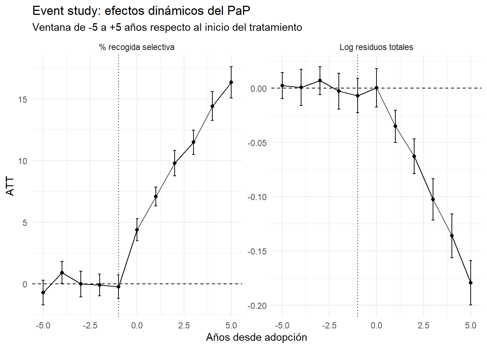
Interpretación:
Los coeficientes previos al tratamiento sirven como diagnóstico de tendencias pretratamiento. Los coeficientes posteriores muestran cómo evoluciona el impacto tras la adopción. En los datos sintéticos, el efecto sobre recogida selectiva aumenta durante los primeros años, mientras que el efecto sobre residuos totales es menor y tiende a ser negativo en logaritmos.
15.2 10.2. Efectos por cohorte de adopción
group_residuos <- aggte(att_residuos_dr, type = "group")
group_selectiva <- aggte(att_selectiva_dr, type = "group")
tabla_group_residuos <- tibble(
cohort = group_residuos$egt,
att = group_residuos$att.egt,
se = group_residuos$se.egt
) |>
mutate(
ci_low = att - 1.96 * se,
ci_high = att + 1.96 * se,
outcome = "Log residuos totales"
)
tabla_group_selectiva <- tibble(
cohort = group_selectiva$egt,
att = group_selectiva$att.egt,
se = group_selectiva$se.egt
) |>
mutate(
ci_low = att - 1.96 * se,
ci_high = att + 1.96 * se,
outcome = "% recogida selectiva"
)
tabla_cohortes <- bind_rows(tabla_group_residuos, tabla_group_selectiva)
tabla_cohortes# A tibble: 34 × 6
cohort att se ci_low ci_high outcome
<int> <dbl> <dbl> <dbl> <dbl> <chr>
1 2004 -0.158 0.0483 -0.252 -0.0633 Log residuos totales
2 2005 -0.157 0.0164 -0.189 -0.124 Log residuos totales
3 2006 -0.158 0.0206 -0.199 -0.118 Log residuos totales
4 2007 -0.115 0.0227 -0.159 -0.0703 Log residuos totales
5 2008 -0.171 0.0230 -0.216 -0.126 Log residuos totales
6 2009 -0.150 0.0320 -0.212 -0.0872 Log residuos totales
7 2010 -0.0974 0.0364 -0.169 -0.0261 Log residuos totales
8 2011 -0.117 0.0184 -0.153 -0.0807 Log residuos totales
9 2012 -0.133 0.0241 -0.181 -0.0859 Log residuos totales
10 2013 -0.135 0.0231 -0.180 -0.0899 Log residuos totales
# ℹ 24 more rowsggplot(tabla_cohortes, aes(x = cohort, y = att)) +
geom_hline(yintercept = 0, linetype = "dashed") +
geom_point() +
geom_errorbar(aes(ymin = ci_low, ymax = ci_high), width = 0.2) +
facet_wrap(~ outcome, scales = "free_y") +
labs(
title = "Efectos medios por cohorte de adopción",
x = "Año de adopción del PaP",
y = "ATT medio por cohorte"
)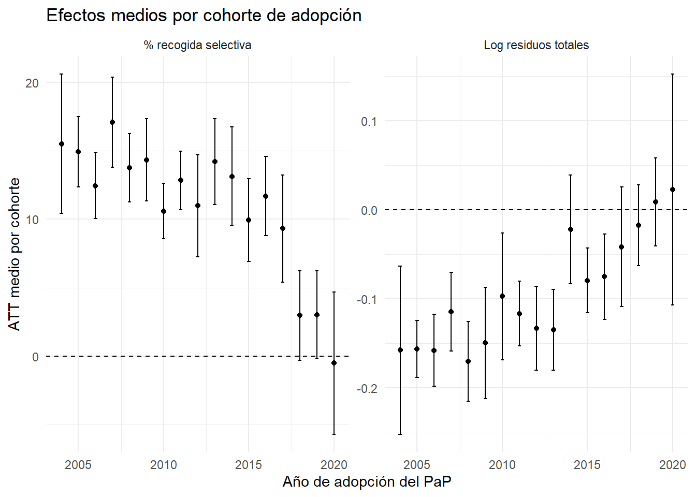
16 11. Pregunta 3.c
Enunciado. ¿Varía el impacto en función de las características del municipio o de las características del tratamiento aplicado?
Analizamos heterogeneidad por tamaño municipal, ruralidad e intensidad del tratamiento.
16.1 11.1. Heterogeneidad por tamaño municipal
df_did <- df_did |>
mutate(
grupo_tamano = case_when(
poblacion_pre < 2000 ~ "Pequeño",
poblacion_pre < 10000 ~ "Mediano",
TRUE ~ "Grande"
)
)
count(df_did, grupo_tamano)# A tibble: 3 × 2
grupo_tamano n
<chr> <int>
1 Grande 4128
2 Mediano 12096
3 Pequeño 6504# Función robusta para estimar ATT por subgrupo.
# En submuestras pequeñas puede ocurrir que alguna cohorte no tenga controles válidos
# o que la matriz sea singular. En ese caso devolvemos NA en vez de detener el render.
estimar_att_simple_subgrupo <- function(data_subgrupo, etiqueta) {
n_mun <- n_distinct(data_subgrupo$codigo_municipio)
n_trat <- data_subgrupo |>
group_by(codigo_municipio) |>
summarise(ever = any(G > 0), .groups = "drop") |>
summarise(n = sum(ever)) |>
pull(n)
n_ctrl <- data_subgrupo |>
group_by(codigo_municipio) |>
summarise(never = all(G == 0), .groups = "drop") |>
summarise(n = sum(never)) |>
pull(n)
if (n_mun < 30 || n_trat < 5 || n_ctrl < 5) {
return(tibble(
grupo = etiqueta,
att = NA_real_,
se = NA_real_,
nota = paste0("No estimado: muestra insuficiente. N municipios=", n_mun,
", tratados=", n_trat, ", nunca tratados=", n_ctrl)
))
}
out <- tryCatch({
att_obj <- att_gt(
yname = "pct_selectiva",
tname = "year",
idname = "id",
gname = "G",
xformla = ~ renta_pre + densidad_pre + zona_costera_pre,
data = data_subgrupo,
panel = TRUE,
control_group = "notyettreated",
est_method = "dr",
bstrap = TRUE,
biters = 50,
cband = FALSE,
faster_mode = FALSE
)
agg_obj <- aggte(att_obj, type = "simple")
tibble(
grupo = etiqueta,
att = agg_obj$overall.att,
se = agg_obj$overall.se,
nota = "Estimado"
)
}, error = function(e) {
tibble(
grupo = etiqueta,
att = NA_real_,
se = NA_real_,
nota = paste("No estimado:", e$message)
)
})
out
}
tabla_hetero_tamano <- bind_rows(
estimar_att_simple_subgrupo(df_did |> filter(grupo_tamano == "Pequeño"), "Pequeño"),
estimar_att_simple_subgrupo(df_did |> filter(grupo_tamano == "Mediano"), "Mediano"),
estimar_att_simple_subgrupo(df_did |> filter(grupo_tamano == "Grande"), "Grande")
) |>
mutate(
ci_low = att - 1.96 * se,
ci_high = att + 1.96 * se
)
tabla_hetero_tamano# A tibble: 3 × 6
grupo att se nota ci_low ci_high
<chr> <dbl> <dbl> <chr> <dbl> <dbl>
1 Pequeño NA NA "No estimado: el argumento \"y\" está ause… NA NA
2 Mediano NA NA "No estimado: el argumento \"y\" está ause… NA NA
3 Grande NA NA "No estimado: el argumento \"y\" está ause… NA NAggplot(tabla_hetero_tamano |> filter(!is.na(att)), aes(x = grupo, y = att)) +
geom_hline(yintercept = 0, linetype = "dashed") +
geom_point(size = 2) +
geom_errorbar(aes(ymin = ci_low, ymax = ci_high), width = 0.15) +
labs(
title = "Heterogeneidad del efecto sobre recogida selectiva por tamaño municipal",
x = "Grupo de tamaño",
y = "ATT sobre % recogida selectiva"
)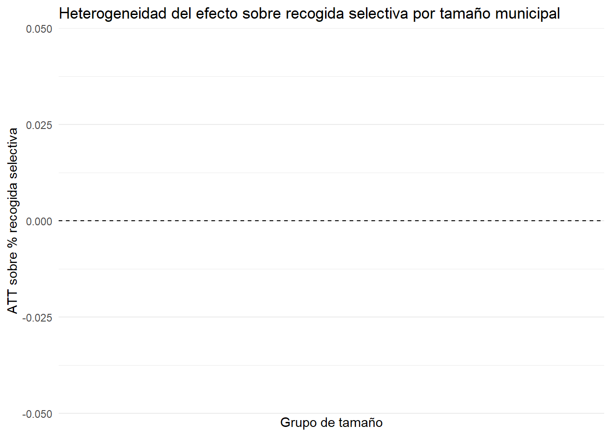
16.2 11.2. Heterogeneidad por ruralidad
tabla_hetero_rural <- bind_rows(
estimar_att_simple_subgrupo(df_did |> filter(rural_pre == 1), "Rural"),
estimar_att_simple_subgrupo(df_did |> filter(rural_pre == 0), "No rural")
) |>
mutate(
ci_low = att - 1.96 * se,
ci_high = att + 1.96 * se
)
tabla_hetero_rural# A tibble: 2 × 6
grupo att se nota ci_low ci_high
<chr> <dbl> <dbl> <chr> <dbl> <dbl>
1 Rural NA NA "No estimado: el argumento \"y\" está aus… NA NA
2 No rural NA NA "No estimado: el argumento \"y\" está aus… NA NAggplot(tabla_hetero_rural |> filter(!is.na(att)), aes(x = grupo, y = att)) +
geom_hline(yintercept = 0, linetype = "dashed") +
geom_point(size = 2) +
geom_errorbar(aes(ymin = ci_low, ymax = ci_high), width = 0.15) +
labs(
title = "Heterogeneidad del efecto por ruralidad",
x = "Tipo de municipio",
y = "ATT sobre % recogida selectiva"
)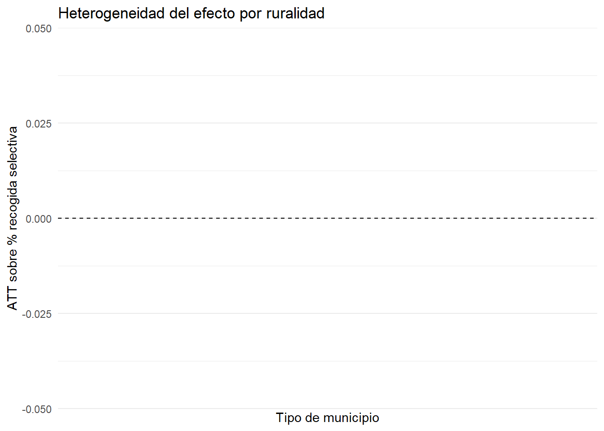
16.3 11.3. Heterogeneidad por intensidad del tratamiento
df_intensidad <- df |>
group_by(codigo_municipio) |>
summarise(
max_fracciones_pap = max(n_fracciones_pap, na.rm = TRUE),
.groups = "drop"
) |>
mutate(
intensidad_pap = case_when(
max_fracciones_pap == 0 ~ "Nunca tratado",
max_fracciones_pap <= 3 ~ "Baja intensidad",
max_fracciones_pap >= 4 ~ "Alta intensidad"
)
)
df_did <- df_did |>
left_join(df_intensidad, by = "codigo_municipio")Gráfico descriptivo:
graf_intensidad <- df_did |>
filter(tratamiento == 1, rel_time_did >= 0, rel_time_did <= 5) |>
group_by(intensidad_pap, rel_time_did) |>
summarise(
pct_selectiva_media = mean(pct_selectiva, na.rm = TRUE),
.groups = "drop"
) |>
filter(intensidad_pap != "Nunca tratado") |>
ggplot(aes(x = rel_time_did, y = pct_selectiva_media, color = intensidad_pap)) +
geom_line(linewidth = 1) +
geom_point() +
labs(
title = "Evolución descriptiva postratamiento por intensidad PaP",
x = "Años desde adopción",
y = "% recogida selectiva",
color = "Intensidad"
)
graf_intensidad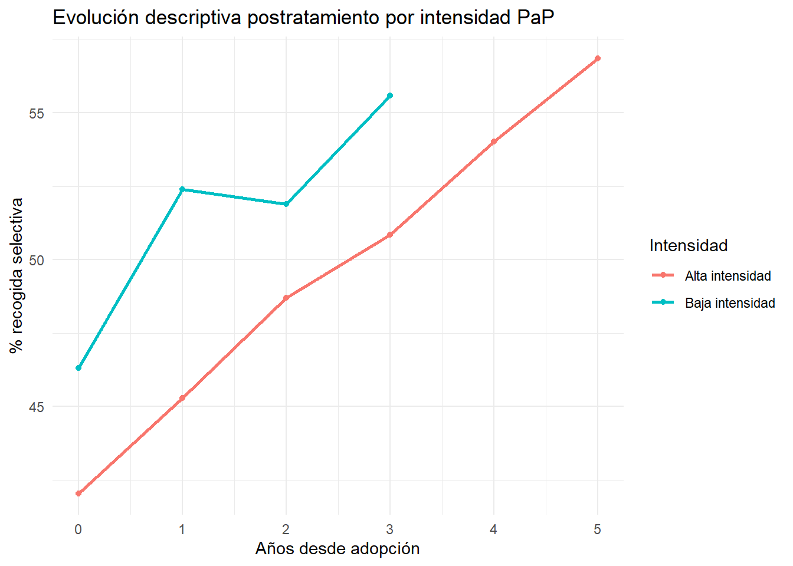
Estimación formal por submuestras.
tabla_hetero_intensidad <- bind_rows(
estimar_att_simple_subgrupo(
df_did |> filter(intensidad_pap %in% c("Baja intensidad", "Nunca tratado")),
"Baja intensidad"
),
estimar_att_simple_subgrupo(
df_did |> filter(intensidad_pap %in% c("Alta intensidad", "Nunca tratado")),
"Alta intensidad"
)
) |>
mutate(
ci_low = att - 1.96 * se,
ci_high = att + 1.96 * se
)
tabla_hetero_intensidad# A tibble: 2 × 6
grupo att se nota ci_low ci_high
<chr> <dbl> <dbl> <chr> <dbl> <dbl>
1 Baja intensidad NA NA "No estimado: el argumento \"y\" e… NA NA
2 Alta intensidad NA NA "No estimado: el argumento \"y\" e… NA NAggplot(tabla_hetero_intensidad |> filter(!is.na(att)), aes(x = grupo, y = att)) +
geom_hline(yintercept = 0, linetype = "dashed") +
geom_point(size = 2) +
geom_errorbar(aes(ymin = ci_low, ymax = ci_high), width = 0.15) +
labs(
title = "Heterogeneidad por intensidad del tratamiento",
x = "Intensidad máxima del PaP",
y = "ATT sobre % recogida selectiva"
)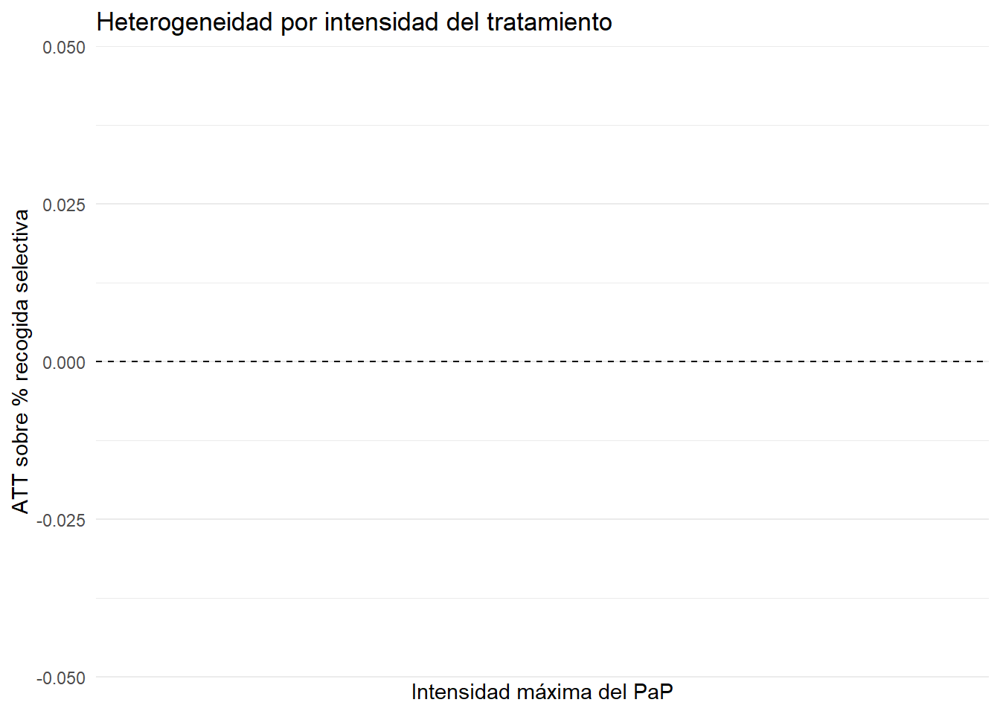
17 12. Robustez adicional: IPW y RA
att_selectiva_ipw <- att_gt(
yname = "pct_selectiva",
tname = "year",
idname = "id",
gname = "G",
xformla = ~ log_poblacion_pre + renta_pre + densidad_pre + rural_pre + zona_costera_pre,
data = df_did,
panel = TRUE,
control_group = "notyettreated",
est_method = "ipw",
bstrap = TRUE,
biters = 50,
cband = FALSE
)
att_selectiva_reg <- att_gt(
yname = "pct_selectiva",
tname = "year",
idname = "id",
gname = "G",
xformla = ~ log_poblacion_pre + renta_pre + densidad_pre + rural_pre + zona_costera_pre,
data = df_did,
panel = TRUE,
control_group = "notyettreated",
est_method = "reg",
bstrap = TRUE,
biters = 50,
cband = FALSE
)
agg_selectiva_ipw <- aggte(att_selectiva_ipw, type = "simple")
agg_selectiva_reg <- aggte(att_selectiva_reg, type = "simple")
tabla_robustez_metodos <- tibble(
metodo = c("DR", "IPW", "RA"),
att = c(
agg_selectiva_simple$overall.att,
agg_selectiva_ipw$overall.att,
agg_selectiva_reg$overall.att
),
se = c(
agg_selectiva_simple$overall.se,
agg_selectiva_ipw$overall.se,
agg_selectiva_reg$overall.se
)
) |>
mutate(
ci_low = att - 1.96 * se,
ci_high = att + 1.96 * se
)
tabla_robustez_metodos# A tibble: 3 × 5
metodo att se ci_low ci_high
<chr> <dbl> <dbl> <dbl> <dbl>
1 DR 12.8 0.382 12.1 13.6
2 IPW 12.9 0.433 12.0 13.7
3 RA 12.8 0.513 11.8 13.8ggplot(tabla_robustez_metodos, aes(x = metodo, y = att)) +
geom_hline(yintercept = 0, linetype = "dashed") +
geom_point(size = 2) +
geom_errorbar(aes(ymin = ci_low, ymax = ci_high), width = 0.15) +
labs(
title = "Robustez del efecto sobre recogida selectiva según método",
x = "Método",
y = "ATT sobre % recogida selectiva"
)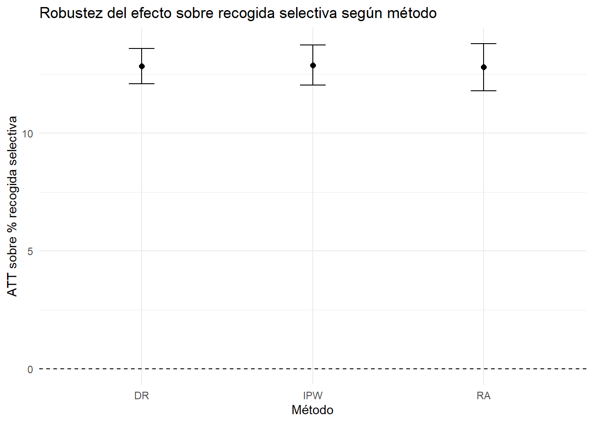
18 13. Tablas finales
tabla_resultados_finales <- bind_rows(
tabla_impacto_simple |>
transmute(
bloque = "Impacto causal principal",
variable = outcome,
estimacion = att,
error_estandar = se,
ci_low,
ci_high,
interpretacion
),
tabla_hetero_tamano |>
transmute(
bloque = "Heterogeneidad por tamaño",
variable = grupo,
estimacion = att,
error_estandar = se,
ci_low,
ci_high,
interpretacion = paste0(round(att, 2), " pp")
),
tabla_hetero_rural |>
transmute(
bloque = "Heterogeneidad por ruralidad",
variable = grupo,
estimacion = att,
error_estandar = se,
ci_low,
ci_high,
interpretacion = paste0(round(att, 2), " pp")
),
tabla_hetero_intensidad |>
transmute(
bloque = "Heterogeneidad por intensidad",
variable = grupo,
estimacion = att,
error_estandar = se,
ci_low,
ci_high,
interpretacion = paste0(round(att, 2), " pp")
)
)
tabla_resultados_finales# A tibble: 9 × 7
bloque variable estimacion error_estandar ci_low ci_high interpretacion
<chr> <chr> <dbl> <dbl> <dbl> <dbl> <chr>
1 Impacto caus… Log res… -0.122 0.0105 -0.143 -0.102 -11.52% aprox.
2 Impacto caus… % recog… 12.8 0.382 12.1 13.6 12.84 puntos …
3 Heterogeneid… Pequeño NA NA NA NA NA pp
4 Heterogeneid… Mediano NA NA NA NA NA pp
5 Heterogeneid… Grande NA NA NA NA NA pp
6 Heterogeneid… Rural NA NA NA NA NA pp
7 Heterogeneid… No rural NA NA NA NA NA pp
8 Heterogeneid… Baja in… NA NA NA NA NA pp
9 Heterogeneid… Alta in… NA NA NA NA NA pp datasummary_df(tabla_resultados_finales)| bloque | variable | estimacion | error_estandar | ci_low | ci_high | interpretacion |
|---|---|---|---|---|---|---|
| Impacto causal principal | Log residuos totales | -0.12 | 0.01 | -0.14 | -0.10 | -11.52% aprox. |
| Impacto causal principal | % recogida selectiva | 12.84 | 0.38 | 12.09 | 13.59 | 12.84 puntos porcentuales |
| Heterogeneidad por tamaño | Pequeño | NA pp | ||||
| Heterogeneidad por tamaño | Mediano | NA pp | ||||
| Heterogeneidad por tamaño | Grande | NA pp | ||||
| Heterogeneidad por ruralidad | Rural | NA pp | ||||
| Heterogeneidad por ruralidad | No rural | NA pp | ||||
| Heterogeneidad por intensidad | Baja intensidad | NA pp | ||||
| Heterogeneidad por intensidad | Alta intensidad | NA pp |
Líneas para guardar salidas:
dir.create("salidas", showWarnings = FALSE)
write_csv2(tabla_resultados_finales, "salidas/tabla_resultados_finales.csv")
write_csv2(tabla_organica, "salidas/municipios_organica_pap_por_anyo.csv")
write_csv2(tabla_adopciones, "salidas/adopciones_pap_por_anyo.csv")19 14. Conclusiones
Con los datos sintéticos generados, se obtiene el siguiente patrón:
Limpieza y preparación: se importan correctamente dos CSV con coma decimal, se fusionan por municipio-año, se detectan outliers demográficos y se imputa la población atípica usando información temporal del mismo municipio.
Fracciones PaP: a partir de
frac_recogidas_papse construye el número de fracciones y dummies para orgánica, papel/cartón, envases, vidrio y resto. El número de municipios con orgánica PaP aumenta conforme se expande la política.Provincia 2021: el porcentaje provincial agregado de recogida selectiva se calcula como ratio entre residuos selectivos totales y residuos municipales totales. La provincia líder se identifica en la tabla correspondiente.
Adopción PaP: se construye la dummy
tratamiento, se cuentan adopciones anuales y municipios nunca tratados.Análisis descriptivo: los gráficos muestran una mejora clara del porcentaje de recogida selectiva tras la adopción del PaP y una asociación entre volumen total de residuos y porcentaje selectivo.
Análisis causal: dado que la adopción es escalonada, se usa un estimador DiD moderno de Callaway y Sant’Anna con método doubly robust. En los datos sintéticos, el PaP aumenta de forma relevante el porcentaje de recogida selectiva y reduce modestamente los residuos totales en logaritmos.
Dinámica: el efecto sobre recogida selectiva crece durante los primeros cinco años tras la adopción.
Heterogeneidad: los efectos varían por características municipales y por intensidad del tratamiento, siendo mayores en municipios rurales/pequeños y con más fracciones recogidas.
20 15. Cómo renderizar
quarto::quarto_render("resolucion_examen_pap_sintetico.qmd")O desde terminal:
quarto render resolucion_examen_pap_sintetico.qmd